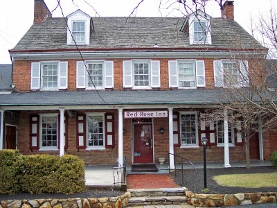
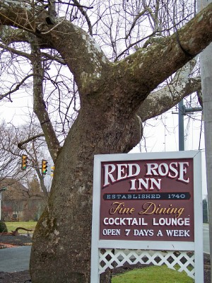
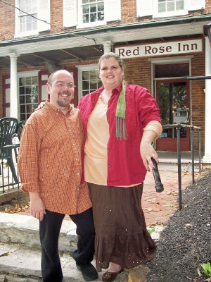
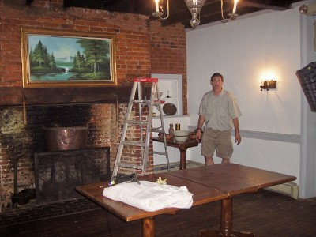
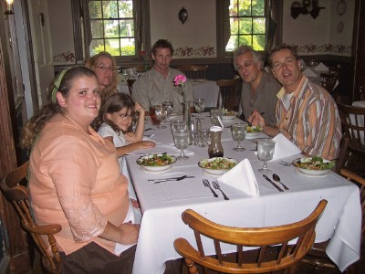
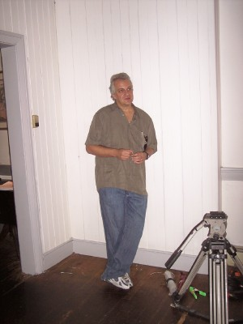
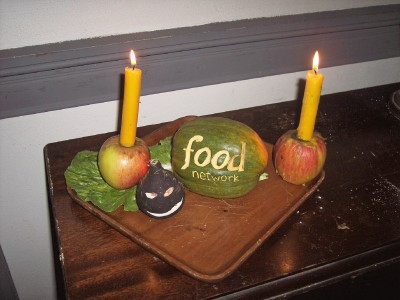
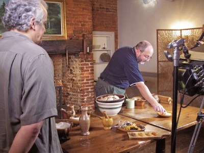
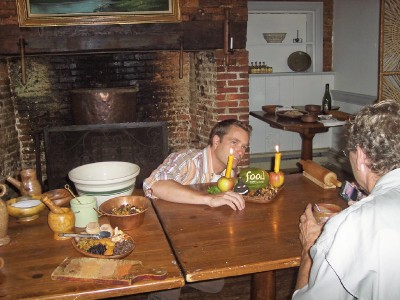
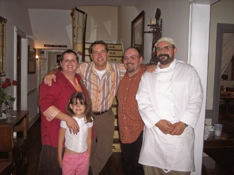

|
Gode
Cookery on the Food Network
Information and pictures from our 2004 segment on Trenchers for "The Secret Life of Sandwiches" are HERE. Information and pictures from our 2005 segment on Roman Cakes for "The Secret Life of Birthday Cakes" are HERE. In July of 2006, Stanley Brown of Greystone TV contacted Gode Cookery (that being me, Jim Matterer, and the good friend I affectionately call "The Food Network Babe," Tammy Crawford) about our appearance on a 3rd episode of "The Secret Life of..." starring host Jim O'Connor. Our assignment: to make Soul Cakes for a holiday special, "The Secret Life of Hallowe'en." Naturally, we were happy & excited to hear from Greystone, and soon made arrangements for Stanley, Jim O'Connor, and crew to meet with us at the beautiful & historic Red Rose Inn in Jennersville, PA.  The Red Rose Inn Originally established in 1740, the Red Rose was probably THE most appropriate spot for us to tape an episode on Hallowe'en food, as it is reputed to be haunted by not only one, but at least two ghosts. The Inn is still in operation today, with one of our own Gode Cookery cooks, Darell McCormick, employed there as Sous Chef. Old, creaky, & a bit mysterious, the Inn welcomed us on July 25th and lent its suitable atmosphere to our taping. 
On left,
the "haunted" tree which stands outside the Inn; on right, Jim &
Tammy
Soul Cakes are the traditional British "pre-cursor" to modern trick-or-treating. For centuries throughout British history, the dates of Oct. 31 (All Hallow's Eve), Nov. 1 (All Saint's Day), & Nov. 2 (All Soul's Day) were known as the season of "Hallowtide," which was marked by processions of "mummers," going from door to door, or town to town, begging for Soul Cakes: "Soul Cake, soul cake,
please good missus, a soul cake.
An apple, a plum, a peach, or a cherry, anything good thing to make us merry. One for Peter, one for Paul, & three for Him who made us all." For this episode, Tammy & I prepared cakes from a recipe dated 1604, from the English cookbook known as Elinor Fettiplace's Receipt Book: Take flower & sugar & nutmeg & cloves & mace & sweet butter & sack & a little ale barme, beat your spice, & put in your butter & your sack, cold, then work it well all together, & make it in little cakes, & so bake them, if you will you may put in some saffron into them and fruit. Here is the modern recipe we worked out for the show: Gode Cookery Soul Cakes
In a large bowl, combine the flour and sugar. Make a well (a depression, or hollow area in the center of the dry ingredients) in the flour/sugar mixture and pour in the ale barm. Leave these ingredients unmixed so that the ale barm may proof. In a separate bowl, cream the butter and the spices. When well blended, slowly beat in the sack. In the large bowl, cover the ale barm with some of the flour/sugar mixture, then add the creamed butter, spices, & sack, and with a large spoon, begin gently blending until the mixture resembles coarse, wet sand. Finish the blending process with your hands, kneading in the bowl until it forms a ball of dough. The finished product needs to be smooth & elastic, and soft but not sticky. Add more flour if the dough is too wet; add more sack if too dry. Roll this dough out onto a floured surface into a 8"-10" circle. Use a lightly floured 2"-3" round cutter to make the cakes. (The earliest references to Soul Cakes describe them as flat & oval.) Place on a baking sheet lined with parchment paper. Let them rest for 5-10 minutes in a warm spot. Bake at 375º F for 15 minutes. Remove from oven and when still hot, sprinkle a little sugar on the top of each cake. Let cool on a wire rack; serve. Makes approx. 1 dozen. 
Some of the fruits &
spices used in making Soul Cakes
The taping, which took approximately 10 hours, was mostly centered in the Red Rose's Fireside Room, one of the oldest rooms in the Inn, equipped with the original hearth and a magnificent brass cauldron. 
The Fireside Room, being prepared for the taping Tammy & I had great fun with host Jim O'Connor, as usual - he's an incredibly gregarious and warm human being, and The Secret Life of... wouldn't be the same without his happy presence. We joked, we laughed, and we even sang a little! It was also quite wonderful to have Stanley Brown with us, too. Although he had arranged our first two The Secret Life of... appearances, we had never met him until that day. He and his crew were bright, enthusiastic, and creative to the Nth degree. What a joy it was to work with these talented individuals. The day ended with a fabulous meal, prepared by Gode Cookery's Darell McCormick, Sous Chef at the Red Rose. We dined on Cornish game hen stuffed with a bleu cheese dressing, roasted asparagus, & sweet potato casserole, followed by chocolate cake. 
The cast & crew enjoying a well deserved meal! The Secret Life of Hallowe'en will be broadcast by the Food Network in October, 2006. We'll inform you of the details, including the air date & time, here and at the Gode Cookery website, so please check again soon! ADDITIONAL
PICTURES from the TAPING on JULY 25th, 2006
 Stanley Brown of Greystone TV, the executive producer of The Secret Life of...  Candles in apples, a carved squash, and a jack-o-lantern turnip  Gode Cookery's John Marshal helps prepare the table while Stanley Brown looks on  Jim O'Connor during the taping  From left to right: Tammy Crawford (with daughter Victoria in front), host Jim O'Connor, Jim Matterer, & Sous Chef Darell McCormick Behind-the-Scenes Video! |